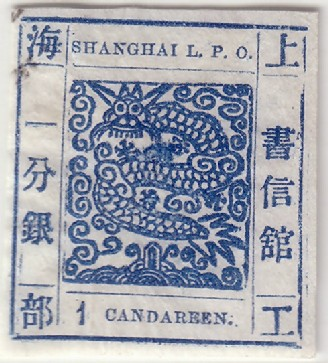
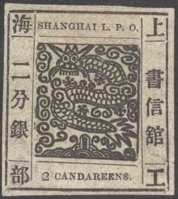
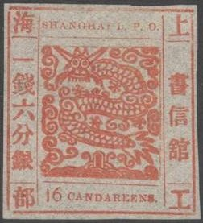
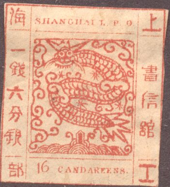
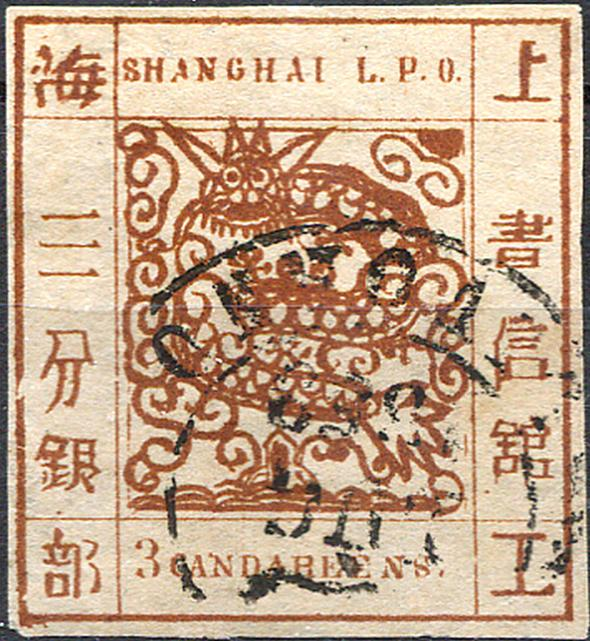
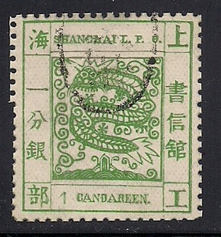

Examples of genuine stamps
Return To Catalogue - Shanghai large dragon issues, forgeries, part 1 - Shanghai large dragon issues of 1865 - China
Shanghai is a port in China
Note: on my website many of the
pictures can not be seen! They are of course present in the
catalogue;
contact me if you want to purchase the catalogue.
Thanks to Wolfgang Balzer for providing useful information about the forgeries of this country.
  
Examples of genuine stamps
There exist many types and forgeries of these stamps (20 forgeries existed already in the early 20th century according to 'Album Weeds'). Already in 1874 Dr.Magnus warns for 2 different types of forgeries in 'Le Timbre Poste No. 134, page 16. The English numerals in the bottom label exists in so-called 'antique' or 'ordinary' style. The value inscription exists in "CANDAREEN" or "CANDAREENS". I'm not quite sure that all the above stamps are genuine. The genuine stamps should have 7 bristles in the beard of the dragon according to Album Weeds. Note that the outer frame line is thick and broken in the corners. The vertical and horizontal frame in the inner of the stamp consists of of 8 thinner lines.
Shanghai large dragon issues, forgeries, part 1, first forgery to fourth forgery, click here.
I think this is the sixteenth forgery described in Album Weeds. It has a thick outline all around the central design. The sentry-box (the thing below the dragon resembling a house), has three lines to support it (instead of two). The bristles of the beard are not vertical as in the genuine stamps, but radiating outwards.
I've seen this forgery cancelled with part of a 'fat' rectangle. Note that the 1 c green is a bogus colour. I've also seen the 8 c blue (also bogus colours, such as "1 CANDAREENS" brown and 16 c blue) of this particular forgery. The word "CANDAREENS" is written too big. The text on top is misspelt as "SHANGHAI L.F.O,.". (with an "F" instead of a "P" and an additional comma). The "I" in the lower right corner has a hook at the bottom.


Note the shape of the second Chinese character at the left hand side (the one with the 'hat'). The upper right ornament is totally filled in with ink.

In the inner rectangle, the curly ornaments in the upper right
hand corner are too far away from each other in this forgery of
the 16 c. I've also seen this forgery cancelled with a pattern of
square dots.
Tenth forgery (10th forgery of Album Weeds?)


I've seen this forgery cancelled with a pattern of square dots
and with a circle consisting of lines.


The horns and ears of the dragon cross the line above them. The
design is overinked. It can be found with an unreadable circular
cancel.


Many ornaments are curling in the wrong direction. For example
the upper left one and the central right curly ornament. A
similar forgery, but with slightly different design exists in the
value 4 Candareens. They might have been made by the same forger,
or were inspired by each other?

This forgery even exists with perforation. The upper left small
ornament is curling in the wrong direction. In all the copies
I've seen, there is a break in the left horn.

Although not 100% identical, an almost identical image appears in
the catalogue of Placido Ramon de Torres
"Album Illustrado para Sellos de Correo" of 1879, page
139 (information passed to me thanks to Gerhard Lang, 2016).

(Reduced size)
The left horn (from our perspective) does not touch the line above it in this forgery. An ornament between the 'house' and the tail is missing.


The small curly ornament coming out of the house at the bottom
touches the tail of the dragon.

This forgery resembles one of the official reprints. The right
horn (from our point of view) of the dragon in the second stamp
is too small. And an ornament (actually a leg of the dragon) is
missing in the central right portion of the stamp.
Seventeenth forgery

This forgery exists with perforation.
Eighteenth forgery


This forgery exists perforated or imperforate. I've seen it with
two additional dots in the design (on top of the left and right
hand side Chinese text).
Nineteenth forgery

The tail of this forgery is totally different from a genuine
stamp (much less pointed).

Image obtained from http://www.numonesidentifier.com/country/20/
On http://www.numonesidentifier.com/country/20/ a 2 CANDAREENS black can be found of this particular forgery type (or at least very probably made by the same forger)..

Wolfgang Balzer mentions a forgery with "SANGHAI" instead of "SHANGHAI" ("H" missing):

A very dubious 8 c stamp.
For later issues of Shanghai, (later than 1865), click here, or here.


{kind=link}
{kind=link}
{kind=link}
{kind=link}
{kind=link}
{kind=link}
{kind=link}
{kind=link}
{kind=link}